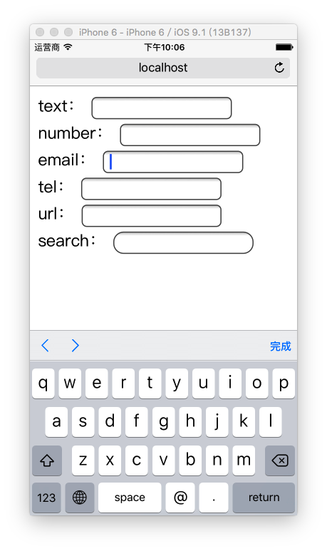
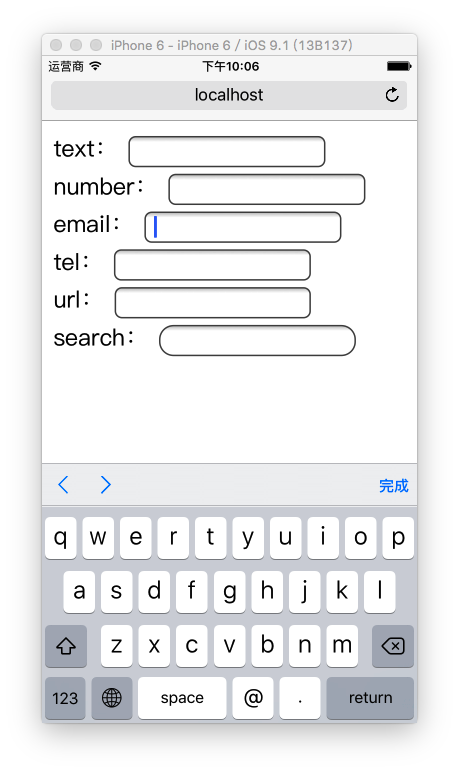

HTML5
一、概述
Web 技术发展时间轴
- 1991 HTML
- 1994 HTML2
- 1996 CSS1 + JavaScript
- 1997 HTML4
- 1998 CSS2
- 2000 XHTML1
- 2002 表格布局
- 2005 AJAX
- 2008 HTML5 草案发布
- 2014 HTML5 定稿
从前端技术看阶段
- Web 1.0 内容为主，主要流行HTML和CSS
- Web 2.0 动态网页，流行AJAX/JavaScript/DOM
- HTML5 时代，WEB开发回归富客户端
Review of HTML
什么是HTML？
Hyper Text Markup Language
超文本标记
什么是超文本标记？
用来表示比普通文本牛X一点的文本
e.g.
<h1>淹死的金鱼</h1>
<h2>xxxx年2月30日 星期一 晴</h2>
<p>
今天一天都没有出太阳，<strong>真不好</strong>，
爸爸买回两条<strong>金鱼</strong>，养在水缸淹死一条，
我很<strong>伤心</strong>。
</p>
SO ~
HTML5是用来表示更NB一点的文本 ？
NO ！！！
这个仅仅可以理解为H5的狭义概念
What is HTML5
H5草案前身
Web Application
提出 by WHATWG @2004
接纳 by W3C @2007
发布HTML5第一个草案 by W3C @2008-01-22
HTML5 ≠ HTML next version
What is HTML5
HTML5 ≈ HTML↑ + CSS↑ + JavaScript API↑
广义上：新一代开发Web富客户端应用程序整体解决方案
Structure → Style → Interactive
全包了！！！
What is Rich Client
- 很强交互性和体验
- 在用户的电脑上使用客户端程序
十年之前

just for 内容，没有交互
想要交互、绚丽的效果
Adobe Flash
e.g. Moodstream、 Waterlife、 monoface、 etc.
被封杀 and 孤芳自赏
link: 关于H5和Flash
When HTML5

让Web开发重新回归富客户端的时代
HTML5 的应用场景
-
极具表现力的网页
- 案例非常多
-
网页应用程序
- PC端：iCloud、百度脑图、Office 365···
- APP端：淘宝、京东、美团···
- WeChat端：淘宝、京东、美团···
-
混合式本地应用
- PC端：网易云音乐、有道词典···
- APP端：淘宝、京东、美团···
- 简单的游戏
HTML5 到底多了点啥？
我个人将这些变化大体分为三类：
- JavaScript API
- HTML
- CSS
HTML
-
标签
- 更语义化标签
- 应用程序标签
-
智能表单
- 新的表单类型
- 虚拟键盘适配
-
网页多媒体
- 音频
- 视频
- 字幕
-
属性
- 链接关系描述
- 结构数据标记
- ARIA
- 自定义属性
-
Canvas
- 2D 绘图
- 3D (WebGL)
- SVG
JavaScript API
-
核心平台提升
- 新的选择器
- Element.classList
- 访问历史API
- 全屏API
-
网页存储
- Application Cache
- localStorage
- sessionStorage
- WebSQL
- IndexedDB
-
设备信息访问
- 网络状态
- 硬件访问
- 设备方向
- 地理围栏
-
拖放操作
- 网页内拖放
- 桌面拖入
- 桌面拖出
-
文件
- 文件系统API
- FileReader
-
网络访问
- XMLHttpRequest
- fetch
- WebSocket
- 多线程
- 桌面通知
CSS
- New Selector
- Web Fonts
- Text Styles
- Opacity
- HSL Color
- Rounded Corners
- Gradients
- Shadows
- Background Enhancements
- Border Image
- Flexible Box Model
- Transforms
- Transitions
- Animations
- etc. 后面详细讨论
HTML5 骨架
- HTML5的DOCTYPE声明做了最大简化
- 在标准的HTML5骨架中charset是直接在meta中设置charset
- 字符编码的设置一定是在head中的第一行，再晚就来不及了
二、语义化标签结构
语义化的标签
就是让HTML代码符合内容的结构化，标签语义化
以前我们可能是这样的：
HTML5新主体结构标签
- section：独立的内容节块，一般包含标题和内容
- article：定义文档中的具体的文章内容
- nav：页面导航的链接组
- aside：标签用来装载非正文的内容
- header：定义文档的页眉
- footer：定义section或document的页脚
以后我们将是这样的：
为什么要有语义化标签
能够便于开发者阅读和写出更优雅的代码，代码如诗
同时让浏览器或是网络爬虫可以很好地解析，从而更好分析其中的内容
更好地搜索引擎优化
切记
- HTML的职责是描述一块内容是什么（或其意义）
- 而不是它长的什么样子，它的外观应该由CSS来决定。
语义化标签 学习目标
- 掌握语义化标签的重要性
- 可以正确使用语义化标签
三、智能表单
新的表单类型
- email - 限定输入内容为邮箱地址
- url - 限定输入内容为URL
- number - 限定输入内容为数字
- range - 数值范围选择器
-
Date Pickers - 日期时间选择器
- date - 选取日、月、年
- month - 选取月、年
- week - 选取周和年
- time - 选取时间（小时和分钟）
- datetime - 选取UTC时间、日、月、年
- datetime-local - 选取本地时间、日、月、年
- search - 搜索域（语言）
新的表单属性
- 新的 form 属性：
- autocomplete
- novalidate
-
新的 input 属性：
- autocomplete
- autofocus
- form
- form overrides (formaction, formenctype, formmethod, formnovalidate, formtarget)
- list
- min / max / step
- multiple
- pattern
- placeholder
- required
虚拟键盘适配
<input type="text" name="txt_text" id="txt_text">
<input type="number" name="txt_number" id="txt_number">
<input type="email" name="txt_email" id="txt_email">
<input type="tel" name="txt_tel" id="txt_tel">
<input type="url" name="txt_url" id="txt_url">
 



智能表单 学习目标
- 网页开发过程中可以针对需求使用特定的智能表单类型
四、网页多媒体
在此之前需要依赖于第三方插件（e.g. flash）
音频
<audio controls="controls">
<source src="src/music.mp3" type="audio/mpeg"/>
</audio>
DEMO：
视频
<video controls="controls">
<!-- 不同浏览器支持格式不一样 -->
<source src="fun.ogg" type="video/ogg" />
<source src="fun.mp4" type="video/mp4" />
<!-- 当浏览器不兼容video标签，就会将他以div方式解析 -->
SHIT 你的浏览器不支持！
</video>
DEMO：
属性

字幕
<video id="clip" controls>
<source src="fun.mp4" type="video/mp4" />
<track label="English subtitles" kind="subtitles"
srclang="en" src="video-subtitles-en.vtt" default />
</video>
全屏 API
var elem = 需要全屏的元素;
if (elem.webkitRequestFullScreen) {
elem.webkitRequestFullScreen();
} else if (elem.mozRequestFullScreen) {
elem.mozRequestFullScreen();
} else if (elem.requestFullScreen){
elem.requestFullScreen();
}
Please press F
SVG *
Scalable Vector Graphics 可缩放矢量图形
基于可扩展标记语言
优势：体积小，质量高，效果好，可控程度高
扩展连接： HTML5中的SVG SVG
Inline SVG Demo
SVG File
多媒体 学习目标
- 掌握网页多媒体的意义
- 对Video标签和Audio标签熟练使用
- 自定义播放器（多媒体标签API）
- 了解字幕标签
- 了解SVG是什么东西
- 可以在网页中使用别人做好的SVG
五、JS 基础 API
New Selectors
提供类似于jQuery中选择器的API
-
通过类名查找元素
document.getElementById('section1'); √ 已经get document.getElementsByTagName('div'); √ 已经get document.getElementsByClassName('section'); -
通过CSS选择器语法查找元素
document.querySelectorAll('ul'); document.querySelectorAll('.container'); document.querySelector('div#container > .inner');
Element.classList
提供类似于jQuery中CSS操作的API
<div id="demo" class="highlighted"></div>
// script
document.querySelector('#btn')
.addEventListener('click', function() {
var demoElement = document.querySelector('#demo');
var demoClassList = demoElement.classList;
demoClassList.add('bordered'); // 添加一个类名
demoClassList.add('shadowed'); // 添加一个类名
demoClassList.remove('highlighted'); // 删除一个类名
// 获取是否存在指定类名
var isAnimated = demoClassList.contains('animated');
// 根据第二个参数切换一个类名
demoClassList.toggle('animated', !isAnimated);
console.log(demoClassList);
// ["bordered", "shadowed", "animated"]
});
自定义属性 data-* !
通过DOM存储与DOM对象强相关的数据
<ul id="users">
<li data-id="1" data-age="18" data-gender="true">张三</li>
<li data-id="2" data-age="18" data-gender="false">李四</li>
<li data-id="3" data-age="18" data-gender="true">王二</li>
</ul>
var listItems = document.querySelectorAll('#users > li');
var dataset = listItems[0].dataset;
console.log(dataset);
// output: {id:1,age:18,gender:true}
JS 基础 API 学习目标
- 熟练使用新选择器和ClassList
- 熟练使用data-*自定义属性
- 对访问历史操作有基本的了解，为以后开发SPA做准备
六、离线存储
通过以下API，可以轻松构建离线H5应用
Application Cache
就是让网页可以离线访问的技术
<html manifest="cache.manifest">
CACHE MANIFEST
# version 1.0.7
CACHE:
css/style.css
js/script.js
img/logo.png
index.html
NETWORK:
*
WebStorage
localStorage & sessionStorage
var btnSet = document.querySelector('#btn_set');
var btnGet = document.querySelector('#btn_get');
var txtValue = document.querySelector('#txt_value');
btnGet.addEventListener('click', function() {
// txtValue.value = localStorage.getItem('key1');
txtValue.value = localStorage['key1'];
});
btnSet.addEventListener('click', function() {
// localStorage.setItem('key1', txtValue.value);
localStorage['key1'] = txtValue.value;
});
网页存储 学习目标
- 熟练使用Application Cache
- 熟练使用本地存储
七、文件 API
读取本地文件信息
通过file表单或拖放操作选择文件
还可以通过JavaScript读取文件的名称、大小、类型、和修改时间
<input id="input_1" class="form-control" type="file">
// script
var input = document.querySelector('#input_1');
// 获取文件域中选择的文件
// var file = input.files[0];
var file = input.files.item(0);
FileReader API
单只是读取文件信息没意思，读内容
FileReader 就是用来读取本地文件的对象
var reader = new FileReader();
reader.addEventListener('load', function () {
this.result; // 读取出来的结果
});
reader.readAsText(file); // 以文本的形式读取
reader.readAsDataURL(file); // 以DataURI的形式读取
// 以下（后台工程师用，前端不会用到）
reader.readAsBinaryString(file); // 二进制格式
reader.readAsArrayBuffer(file); // 字节数组
文件系统 学习目标
- 熟练使用File API
- 利用FileReader实现上传文件前在页面本地预览
八、拖放操作
网页内拖放
参考链接：拖放操作
桌面文件拖放
document.querySelector('#dropzone')
.addEventListener('drop', function(e) {
var reader = new FileReader();
reader.onload = function(e) {
document.querySelector('img').src = e.target.result;
};
reader.readAsDataURL(e.dataTransfer.files[0]);
});
拖放操作 学习目标
- 学会使用ondragstart
- 学会使用ondragend
- 学会使用ondragover
- 学会使用ondragleave
- 学会使用ondrop